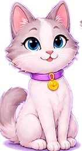
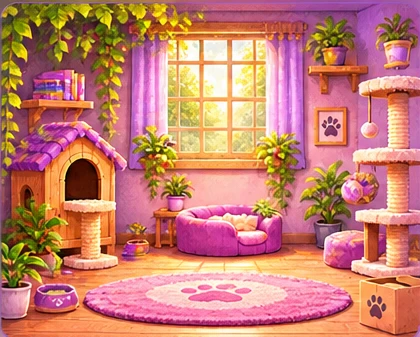

CENA 01 · ABERTURA
CENA 01 · ABERTURAA casa da janela azul
Antes de Suspiro chegar, a casa aguarda em silêncio na Vila dos Ipês.
Imagem de abertura aprovada.
O vídeo de movimento desta cena ainda será produzido.
O vídeo de movimento desta cena ainda será produzido.
A Casa dos Recomeços · Prévia reproduzível do Capítulo 1.
CENA 01 · ABERTURAAntes de Suspiro chegar, a casa aguarda em silêncio na Vila dos Ipês.

CENA 02Suspiro se aproxima da casa e começa a explorar o lugar.
Vídeo original · 10 segundos · 1280 × 720 · 24 fps
 CENA 03
CENA 03Uma lembrança antiga revela que a casa já foi um abrigo cheio de vida.
Vídeo original · 10 segundos · 1280 × 720 · 24 fps

CENA 04 · PRÓXIMADepois de ler a carta, Suspiro decide começar a restauração.